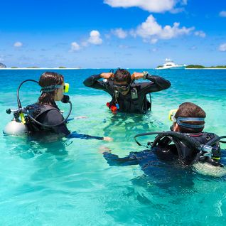

Admin Jul 25 • 2 min
The Top Five Places To Learn To Dive
Divers are really astronauts; gliding weightless through the ocean we observe alien worlds carpeted in vast fields of colourful corals with equally bizarre, enthralling inhabitants - from the foreign clicks of dolphins communicating to minute technicolour slugs (nudibranch). And best yet, you don't need years of gruelling training or a rocket to experience these watery worlds, just four days and a eagle-ray-eyed (sorry) ground control.